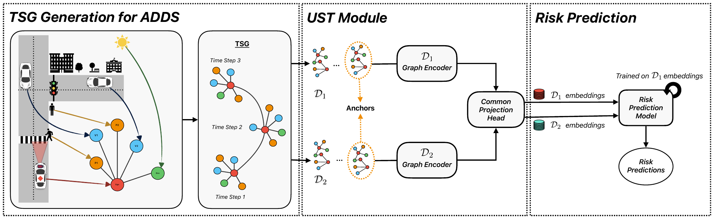

Temporal Knowledge Graphs for Reasoning and Prediction in Traffic Scenes
Autonomous vehicles have to judge risk from imperfect data. This work represents each driving scene as a temporal graph of vehicles, pedestrians, and environment, then learns a shared embedding space so a risk predictor trained on clean data keeps working when observations are noisy.

- Collaboration with National Yang Ming Chiao Tung University and IIT Kanpur.
- Represents each driving scene as a temporal Traffic Scene Graph of the ego vehicle, surrounding vehicles, pedestrians, and environment, built on the nuScenes knowledge graph with ego-centric coordinate normalization.
- Uses heterogeneous Graph Neural Network encoders and a shared projection head to map clean and noisy scene graphs into one embedding space, aligned with a small set of anchor episodes, so a single risk predictor serves both.
- Built 24,002 scene graphs (about 4.2 million nodes) from the nuPlan dataset, with risk labels derived from time-to-collision, post-encroachment time, and deceleration rate.
- Under noisy observations the approach reached 40–42% four-level risk accuracy, against 39% for a model trained on clean data only and 34–38% for one trained on noisy data only. In a cross-city study, performance rose with the number of labeled anchors (Boston Macro F1 from 0.19 without adaptation to 0.42 with 50% anchors).